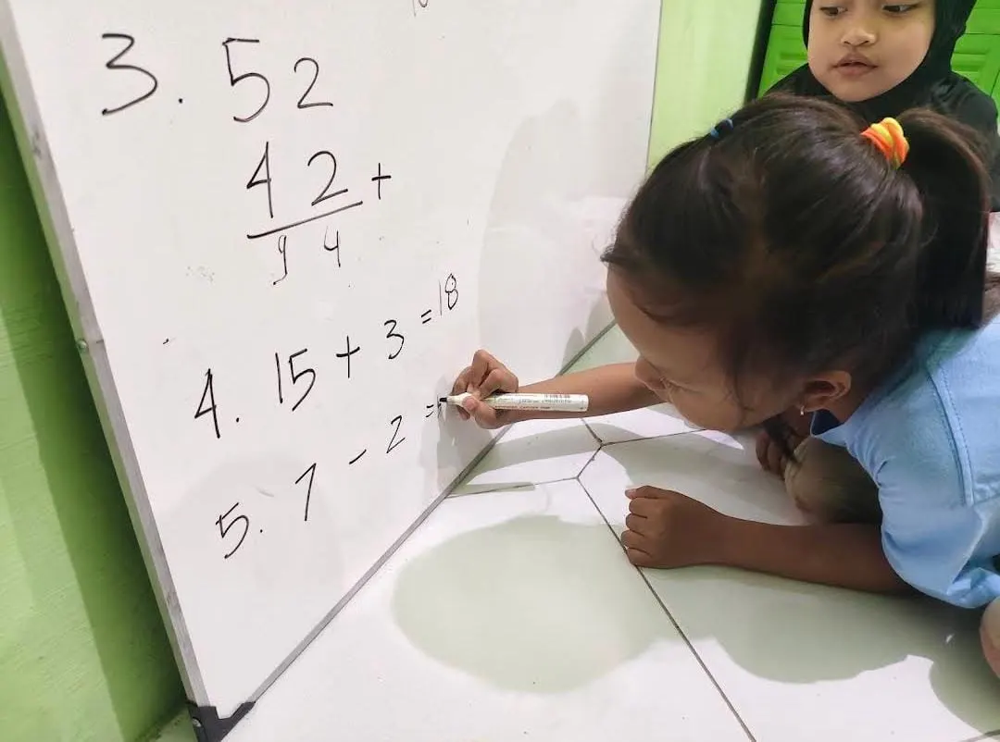
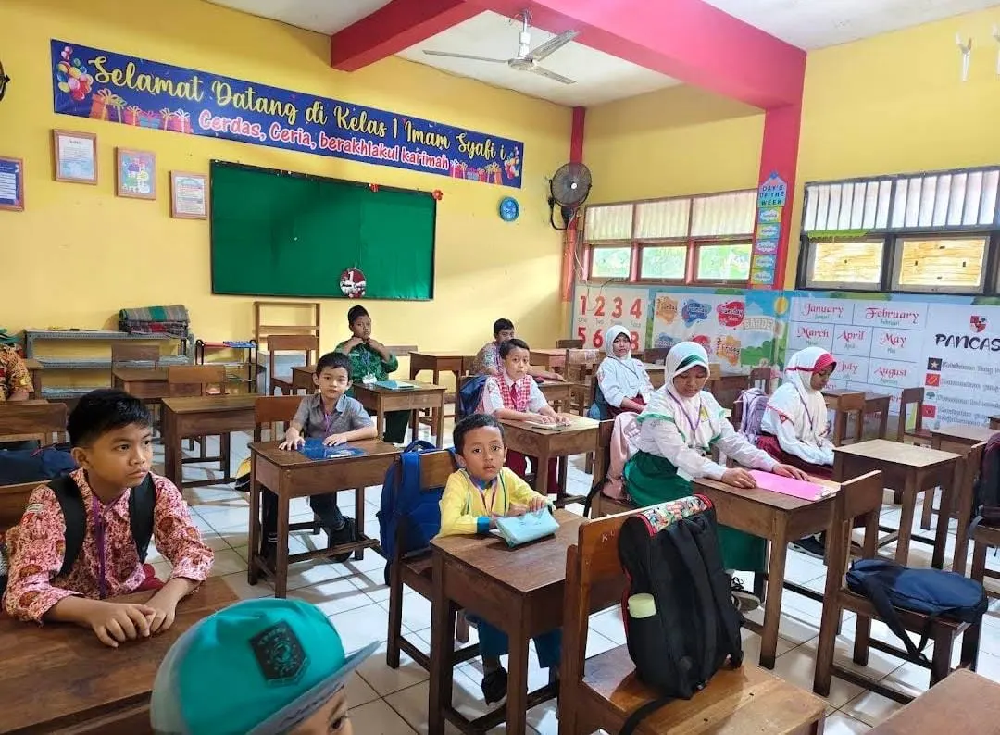
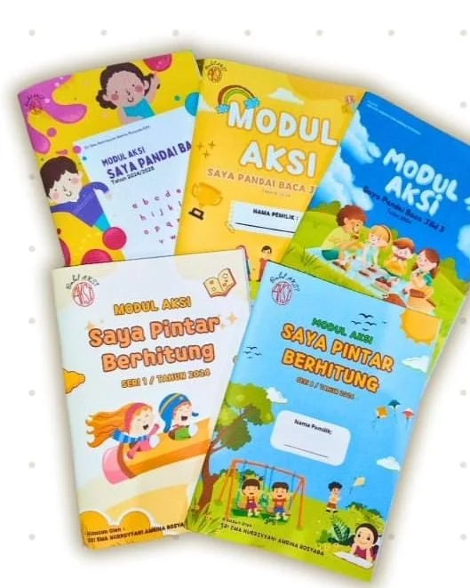
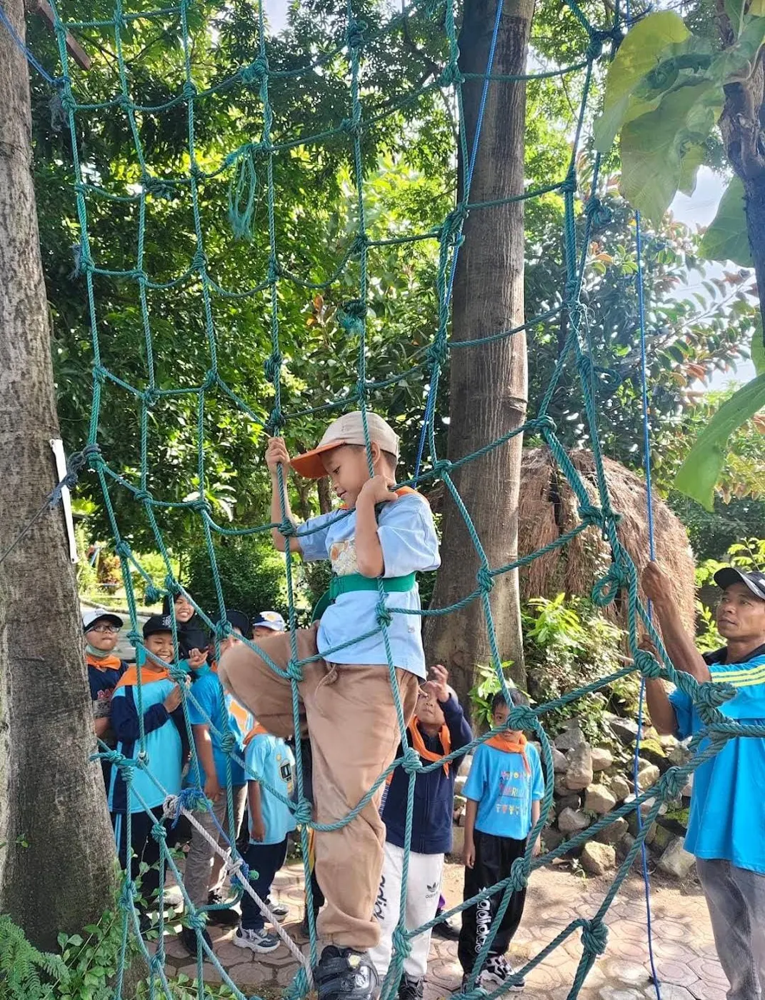
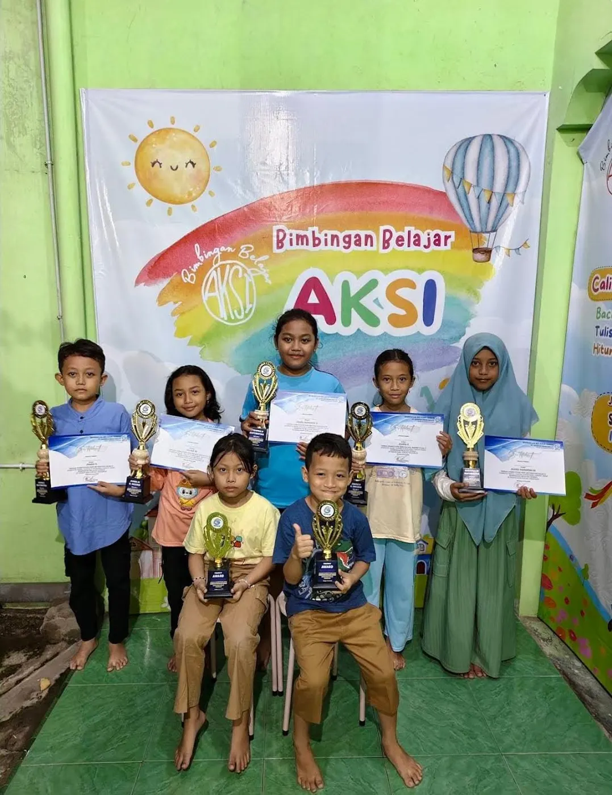

Mulai usia 4 tahun (informasi Maps)
Calistung
Belajar membaca, menulis, dan berhitung secara bertahap dengan buku modul Calistung.
- Membaca
- Menulis
- Berhitung
- Buku modul Calistung
Belajar Ceria, Berkembang Bersama!
Bimbel AKSI mendampingi anak belajar membaca, menulis, berhitung, dan memahami pelajaran sekolah melalui suasana belajar yang menyenangkan.
5,0 dari 5 · 50 ulasan Google Maps

Bimbel AKSI adalah pusat bimbingan belajar di Ganting, Gedangan, Sidoarjo. Kami mendampingi anak belajar Calistung dan pelajaran SD, termasuk pengerjaan PR dan evaluasi perkembangan belajar.
Kenali Bimbel AKSIMulai usia 4 tahun (informasi Maps)
Belajar membaca, menulis, dan berhitung secara bertahap dengan buku modul Calistung.

Siswa SD kelas 1–5
Pendampingan pelajaran sekolah, pengerjaan PR, dan evaluasi perkembangan belajar.
Jadwal, biaya, dan ketersediaan kelas dapat berubah. Tanyakan informasi terbaru melalui WhatsApp.
Anak belajar di ruang yang nyaman dengan pendamping yang sabar, sebagaimana tertulis di ulasan Google Maps.
Pembelajaran SD mengikuti kurikulum sekolah.
Bimbingan pengerjaan PR agar anak tidak belajar sendirian.
Evaluasi dan pelaporan perkembangan belajar.

Ketersediaan mata pelajaran per hari tidak dijamin; tanyakan jadwal terbaru.
Anak belajar dengan buku modul seperti seri Saya Pandai Baca dan Saya Pintar Berhitung. Edisi dan ketersediaan terbaru dikonfirmasi melalui WhatsApp.





Aktivitas tercantum di materi promosi. Detail ketersediaan dan jadwal dikonfirmasi lewat WhatsApp.
“Ananda jadi lebih bersemangat belajarnya, karena di-mentor-i dengan guru-guru hebat.”
“Tempat bimbingan belajar yang sangat nyaman, pembelajaran yang menyenangkan dengan kualitas yang sangat patut diacungi jempol.”
“Tempat bimbel yang dekat dari rumah, guru yang berpengalaman, anak-anak mudah memahami materi dibimbing dengan sabar.”
Jl. Balai Desa Blok 3, RT.04/RW.03, Dusun Ganting, Ganting, Kec. Gedangan, Kabupaten Sidoarjo, Jawa Timur 61254.
Ceritakan usia dan kelas anak. Kami bantu jelaskan program, jadwal, dan biaya terbaru.